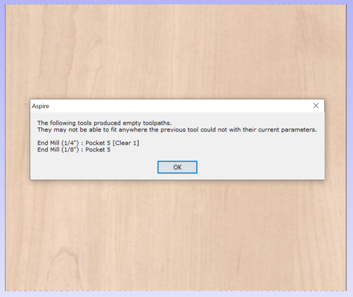
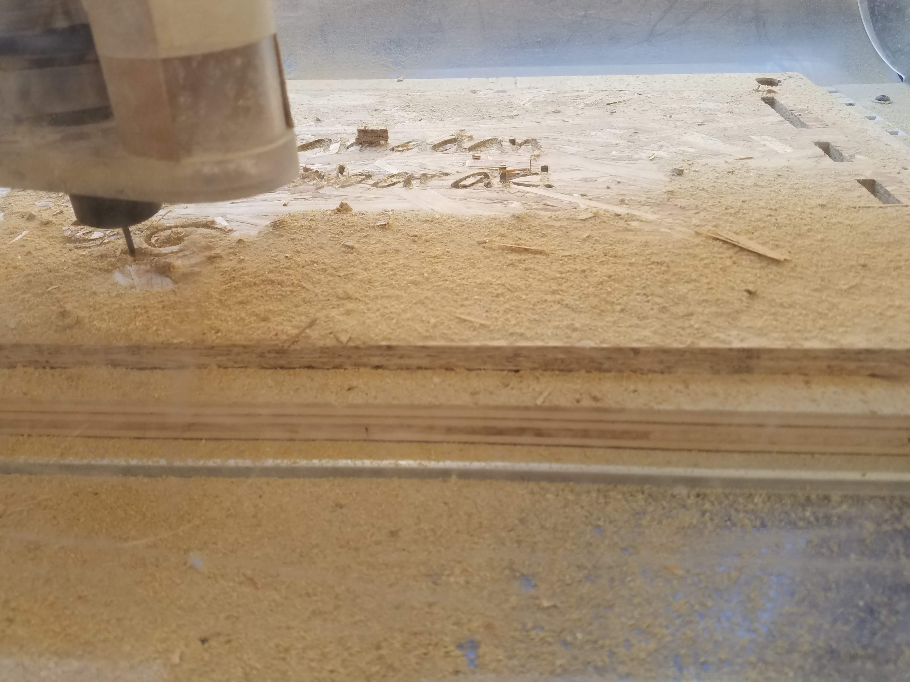
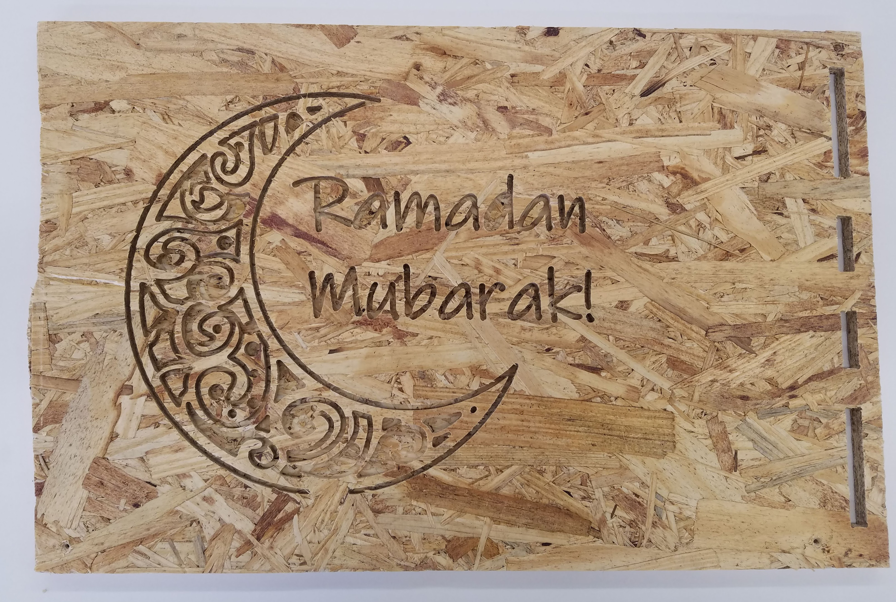
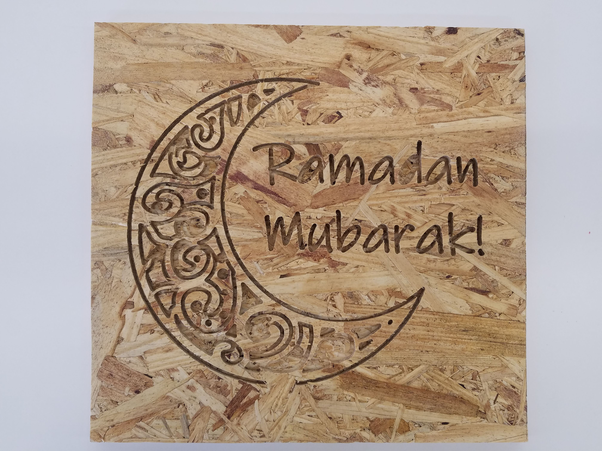
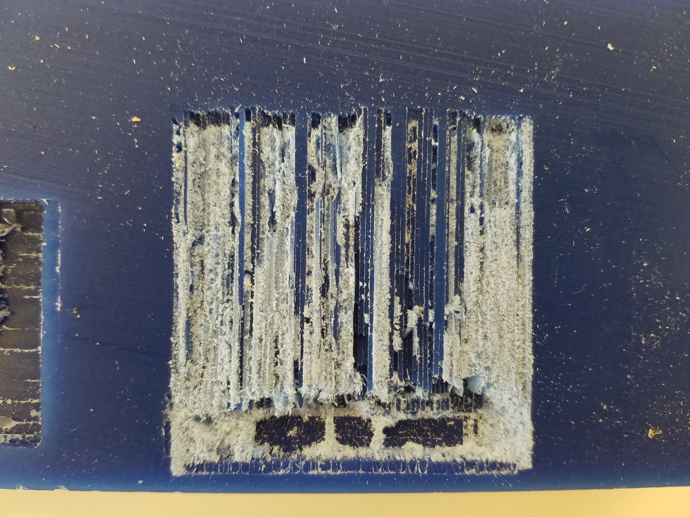
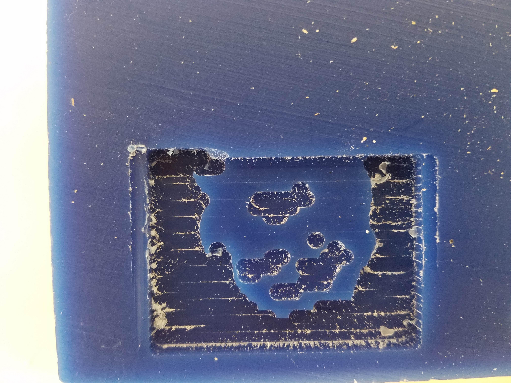
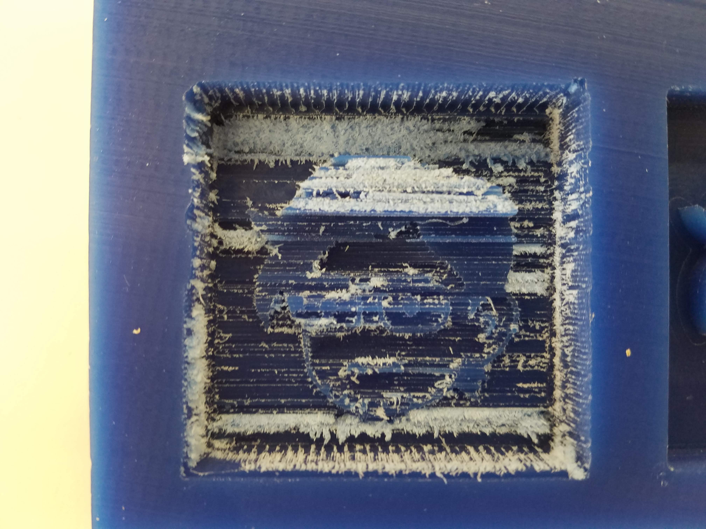

Week 8: CNC Milling, Molding & Casting
Work in progress!
This week, we focused on CNC Milling, Molding & Casting.
We were instructed to design something and make it using CNC (either the ShopBot, the Shaper, or the SRM-20) and to create something by molding and casting. First, I experimented with both the ShopBot and the SRM-20. Using the SRM-20, I was able to mill a 2.5D mold out of a wax block. I used the wax mold to make a silicon mold, which I cast using plaster (DryStone Casting Media mixed with water).
Using the Shopbot:
First, I experimented with the ShopBot. The month of Ramadan had just started, which inspired me to use this design (click here to download the .dxf file):

I found the crescent moon design online and converted the image from a .png file to an .svg file so that I could import it into Fusion 360. I added the text ("Ramadan Mubarak!") and used the "Explode Text" function to change the plain text into an outline of the letters with space inside to be cut. I exported the design as a .dxf file and loaded the file in Aspire to cut using the Shopbot. I inputted the dimensions of the figure and the thickness (average of several readings) of the OSB material using calipers, and joined the vectors. Then, I clicked on the "Pocket toolpath" icon under the "Toolpaths" tab so I could carve the design and letters into the material as pocket cuts. After using wood screws to hold the OSB in place on top of the sacrifical layer, I was ready to turn on the machine. Ibrahim helped me with using the Shopbot. The 1/8" bit was apparently too large to carve out the design and a smaller bit would take significantly longer to cut, so Ibrahim advised me to leave the 1/8" drill bit in and change the drill bit diameter in Aspire. After decreasing the drill bit diameter in Aspire to 1/20", the program calculated a toolpath that would cut out the design and letters. Here are screenshots of the program:
1/4" and 1/8":
1/20":
Changing the diameter of the drill bit in Aspire allowed us to generate a working toolpath. Using a 1/8" bit, however, meant that the cuts would not be as precise. For example, the letters would appear wider (as though letters had been bolded). Given how intricate the design in the crescent moon was, I was worried that using a wider diameter bit would ruin the design and aesthetic. Nonetheless, I decided to try my luck and went ahead with the cut. We set the pocket cut depth as 6mm, which was a little over half the depth of the OSB board (11.2mm). Additionally, we positioned the bit so that it was a paper's width away from the material being carved. A few minutes in, the letters had already been carved out and the machine was making progress on the crescent moon design:
This was the result:
I was happy with the way it came out, all things considered! In part because of the nature of the material and because we were using a larger bit than recommended by the program, the first "a" and the "d" in "Ramadan" and the bottom right of the crescent moon design came out less than perfect. Nonetheless, I was able to use the Shopbot to cut a design and learned how to make pocket cuts using programs like Aspire to generate the toolpath.
I then used a saw to cut off the right side of the board, which had pieces cut out from it. Here is the final result:
I gifted it to a close friend, and they loved it- imperfections and all. ☺️
Using the SRM-20:
I wanted to make a mold of this cartoon drawing of myself (also featured on my "About Me" page):
First, I converted the file into an .svg format using an online file converter and imported it into Fusion 360. There, I extruded parts of the image. The wall of the mold was 13mm; features of my face (hair, glasses, eyes, eyebrows, inner ear, mouth, stubble, outline of face) were 9mm; my skin was 7mm, and the space between my face and the wall was 3mm. The outside dimensions of the mold were 50mm by 50mm. Click here to download the .stl file!
Now that the design was done, I turned my attention to learning how to operate the SRM-20. Unfortunately, I ran into several technical difficulties using the machine. I followed the instructions on the website, but struggled a lot at first. Some issues I ran into included not knowing how to convert the units from inches to mm, the bit falling out 30 minutes into the job (this happened twice, even though I tightened the screw well both times!), and the machine constantly returning a command error that read "The SRM-20 is paused" that prevented me from milling the wax block. Nathan taught me how to change the units in the program, I started taking extra care to tighten the screw really well to avoid the bit from falling out after the first two times, and the last issue somehow resolved itself. Additionally, Gabby advised me to switch from using "mill 3D stl" to "mill 2.5D stl." She also advised me to do a roughing pass using the 1/8" drill bit positioned 1mm above the wax block, then switch to the 1/16" drill bit (positioned 0mm above the wax block), and then switch to the 1/32" drill for a final pass (again positioned 0mm above the wax block)- this was really helpful advice and it's how I finally got the mold I used for casting.
Here are pictures of the first three attempts at milling the wax that did not work out (Note: All of my attempts were done on the same block of wax):
Attempt 1:
Attempt 2:
Attempt 3:
Attempt 4, however, was successful! Here are pictures of the toolpaths generated for each pass:
1/8" bit:

1/16" bit:

1/32" bit:

1/64" bit:

Powered by w3.css
Mohammed Mutaher 2022